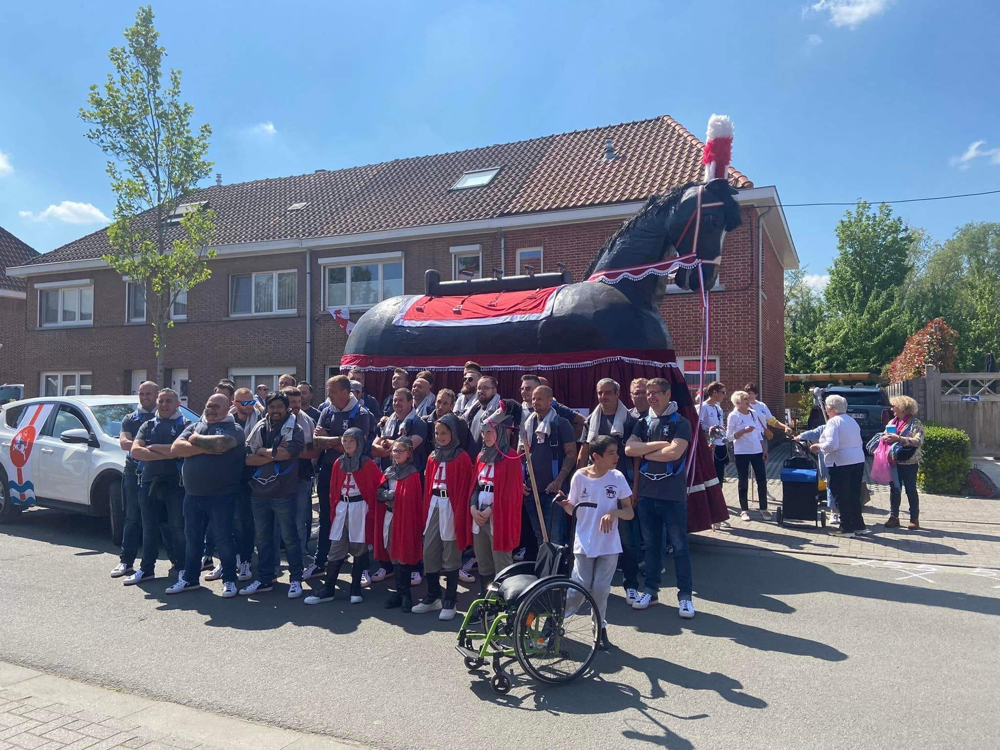

Dit is de officiele website van Ros Donckstraat
Primeur in de Donckwijk in Dendermonde dit weekend. Het Ros Donckstraat zal er voor het eerst in zeer lange tijd zijn opwachting maken. Het volksfeest vindt plaats in aanloop van de Rosse Buurtenstoet volgend jaar.
DENDERMONDE Het wijkcomité Donck-Vlotgraslaan in Dendermonde viert dit jaar zijn jubileumeditie van de wijkfeesten. Normaal gezien vierden ze deze editie twee jaar geleden, maar corona strooide toen roet in het eten. “Omdat het Ros Beiaard ook dat weekend uit gaat, hebben we enkele activiteiten ook ingericht voor het paard", zegt voorzitter Jan Tas.
Voor de 10e keer palmt BOULEVART de Dendermondse binnenstad in met straattheater, circus, muziek, dans, (kinder)animatie, workshops. Op zaterdag krijg je vanaf 17u een stemmig avondprogramma op de Grote Markt. Op zondag wordt de binnenstad opnieuw autovrij voor alweer een fantastische festivaldag!Voor de 10e keer palmt BOULEVART de Dendermondse binnenstad in met straattheater, circus, muziek, dans, (kinder)animatie, workshops. Op zaterdag krijg je vanaf 17u een stemmig avondprogramma op de Grote Markt. Op zondag wordt de binnenstad opnieuw autovrij voor alweer een fantastische festivaldag!
Op 3 en 4 september was het Oudegem kermis met (kinder)jaarmarkt, Reuzenstoet, braderie en Gouden Petattenworp! Geniet mee!
Op 24 april 2022 is het eindelijk zover: De Rosse Buurtenstoet trekt vanaf 14u door de stad om enkele uren later af te sluiten met een apotheose in de Kerkstraat. Het wordt een kleurrijke en creatieve stoet met zang en dans georganiseerd door wijken, verenigingen, scholen en buurten van Dendermonde en moet tonen hoe Dendermonde en zijn deelgemeenten op z'n eigen manier naar de Ros Beiaardommegang toeleeft. De stoet start om 14 uur in de Zuidlaan ter hoogte van Go-Talent en volgt volgende route: Begijnhoflaan, Sint Jorisgilde, Vlasmarkt, Vlasmarktbrug, Ridderstraat, Greffelinck, Zwarte Zusterstraat, Beurzestraat, Kerkstraat, Justitieplein, Franz Courtensstraat, Bogaertbrug, Bogaerdstraat, Dijkstraat, Oude Vest, Brusselsestraat, Vlasmarkt, Vlasmarktbrug, Grote Markt, Kerkstraat Vanaf 18u barst er dan een volksfeest los waar tv-presentator en rasechte Dendermondenaar Dominique Van Malder alles in goede banen leidt en o.a. Vanity Grace en Eddy Del White het publiek voorziet van entertainment! De Rosse Buurtenstoet en volksfeest is een gratis evenement, hapjes en drankjes zijn voorzien en zijn verkrijgbaar aan democratische prijzen.

Voor de 10e keer palmt BOULEVART de Dendermondse binnenstad in met straattheater, circus, muziek, dans, (kinder)animatie, workshops. Op zaterdag krijg je vanaf 17u een stemmig avondprogramma op de Grote Markt. Op zondag wordt de binnenstad opnieuw autovrij voor alweer een fantastische festivaldag!Voor de 10e keer palmt BOULEVART de Dendermondse binnenstad in met straattheater, circus, muziek, dans, (kinder)animatie, workshops. Op zaterdag krijg je vanaf 17u een stemmig avondprogramma op de Grote Markt. Op zondag wordt de binnenstad opnieuw autovrij voor alweer een fantastische festivaldag!
Voor vragen of info gelieve een emazil te sturen !